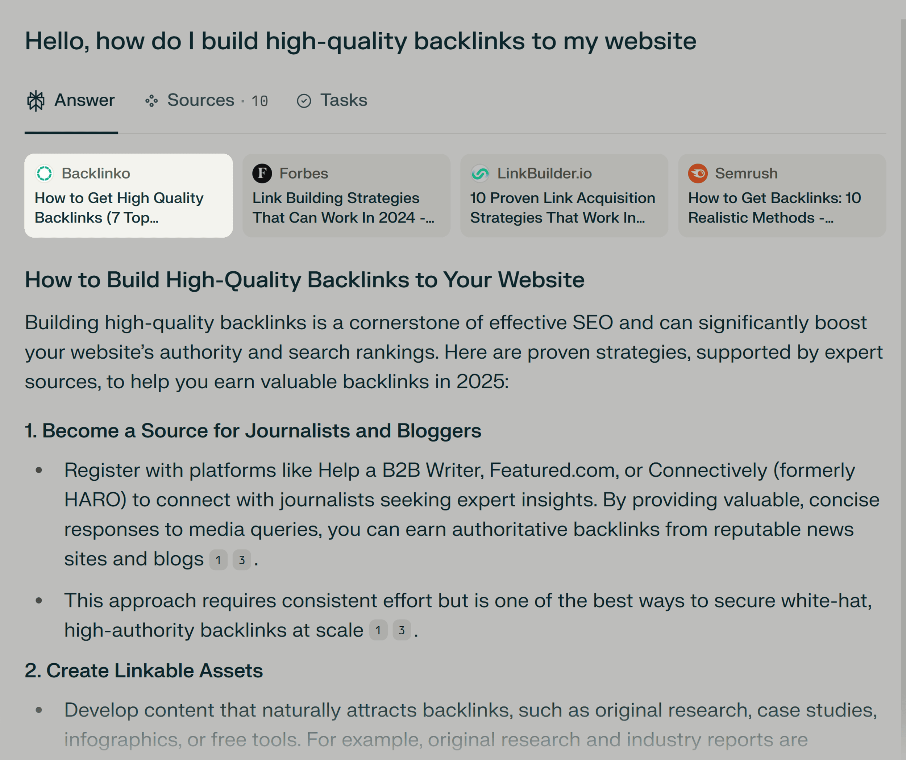

三、哪些内容最容易丢失归因

图片展示了内容被AI答案吸收后，来源展示和实际贡献可能脱节的情况。通用解释最容易丢失归因。因为它和许多来源相似，AI可以从多个页面拼出答案，很难把贡献稳定归到某个品牌。
更有辨识度的内容更容易保留来源感，比如原创框架、明确命名的方法、独家案例、清楚数据口径、作者观点和可引用的定义句。
四、如何让内容更容易保留来源
企业无法完全控制AI如何展示来源，但可以提高内容的可识别性。核心做法是让观点、品牌和证据绑定得更紧，让AI在复述时更难脱离来源。
这并不是在文本里反复堆品牌名，而是建立稳定的命名、清楚的定义、可验证的案例和一致的页面结构。
- 为核心方法或框架使用稳定名称。
- 在定义句中自然包含品牌或研究主体。
- 把原创观点和证据放在同一页面内。
- 让外部来源用一致口径引用你的结论。
五、归因监测不能只看流量
AI搜索可能带来少量点击，却产生大量无点击影响。用户在答案页完成理解或比较后，可能晚些时候通过品牌词、销售咨询或其他渠道转化。
因此，GEO监测要同时看答案截图、来源链接、品牌提及、语义复述、直接访问、品牌搜索和销售线索反馈。归因黑洞不能完全填平，但可以缩小盲区。
六、内部报告要改变归因口径
如果团队仍然只用点击和最后触点衡量内容价值，AI搜索时代会低估大量上游影响。内容可能没有直接带来访问，却帮助AI把品牌放进候选名单。
更合理的报告应区分“可见来源”“语义贡献”和“商业结果”。这样市场、SEO和销售团队才能一起判断内容是否在用户决策中发挥作用。
七、结论：归因黑洞无法消失，但可以变小
AI搜索的归因黑洞不会被单个工具彻底解决，因为答案生成天然会综合多来源。但企业可以通过更清楚的品牌实体、更有辨识度的内容和更全面的监测降低损失。
未来的内容价值不只体现在点击里，也体现在AI是否正确吸收、复述和推荐。能被识别出处的知识资产，会比普通内容更耐用。
FAQ
Q1：AI搜索归因黑洞是什么意思？
它指AI答案可能使用了你的内容、观点或事实，但最终没有展示你的链接、品牌名或可追踪来源。用户获得了信息，企业却难以证明贡献。这个问题会影响流量统计、内容ROI判断和品牌解释权，也会让市场团队低估内容价值。
Q2：为什么AI引用显示的来源不一定准确？
AI答案会综合多个来源，显示链接和答案中的每个观点不一定一一对应。有时链接只是支撑背景，有时观点来自多个页面合并。企业不能只看来源列表，还要检查答案文本是否复述了自己的内容，以及品牌是否被正确提到，才能判断真实贡献。
Q3：怎样减少内容被使用但不署名的情况？
可以提高内容辨识度。使用稳定的方法命名、清楚定义、独家案例、可核验数据口径和品牌相关表述，让观点和来源更难分离。同时让第三方页面以一致口径引用你的观点，也能提高AI识别来源的概率，并减少泛化复述和错配。
Q4：归因黑洞会让内容营销失去价值吗？
不会，但会改变衡量方式。内容可能不再只通过点击表现价值，还会通过AI答案中的品牌理解、推荐语境和后续品牌搜索产生影响。企业需要把可见流量和不可见语义影响分开看，避免低估上游内容，也避免误砍长期资产和关键页面。
Q5：应该用什么指标监测AI搜索归因？
建议同时看链接引用、品牌提及、观点复述、来源位置、答案语气、推荐结果、直接访问和品牌词搜索变化。单一指标很容易误判，因为AI答案里被引用、被认可和被用户记住是三件不同的事，商业影响也可能滞后出现并跨渠道发生。
Q6：归因黑洞能完全填上吗？
很难完全填上。AI答案的生成过程决定了多来源综合和改写会长期存在。企业能做的是让重要内容更有辨识度，让官网和第三方来源互相印证，并建立持续监测，把不可见影响尽量转化成可观察信号，再用于内容决策和预算判断。